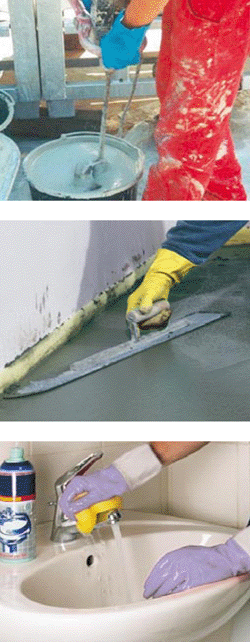

Reagiert die Haut überempfindlich gegenüber bestimmten Substanzen, kommt es zu Hautallergien.
Sie äußern sich in:
| juckender Hautrötung | |
| Schwellung | |
| Bläschenbildung | |
| nässenden Wunden und Krusten |
Der Schutzfilm der Haut ist damit zerstört. Sie wird um ein Vielfaches anfälliger als eine gesunde, geschmeidige Haut.
Stoffe, die Allergien auslösen können:
(Beispiele)
| Epoxidharze | |
| Chromate | |
| Nickel und seine Verbindungen | |
| Gummiinhaltsstoffe |
